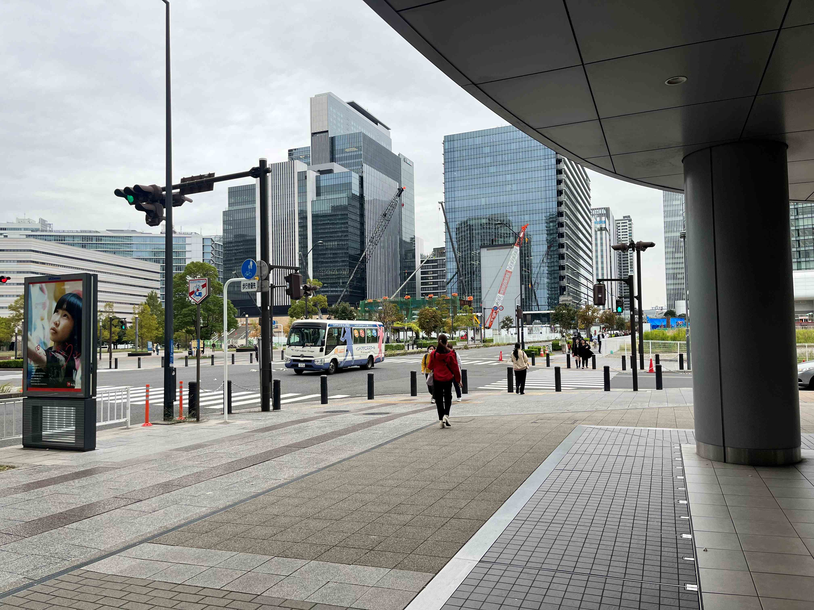
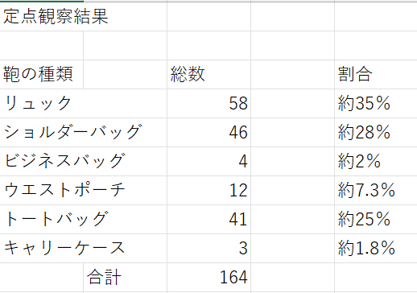
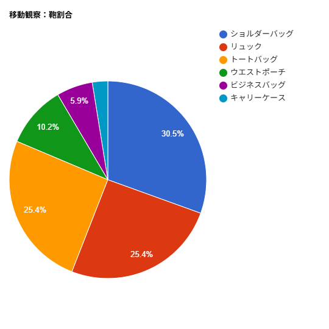

- 場所：okみなとみらい店入口
- 観察の対象：鞄の種類の計測
- 時間：約30分 

観察手法
定点観察
・約30分間に通過した人物を対象に鞄の形状を計測し記録した移動観察
・onedriveで共有した移動観察のスマホ動画を参考に定点観察の場所に至るまでのエリアでどのような鞄を持っているか計測観察結果
定点観察結果
.png)
移動観察結果


考察
定点観察
・リュック：利便性：両手が空き重い荷物を運ぶのに適している、スーパーの前で買い物をするのに適していると言える
位置による影響：またアンパンマンミュージアムや公園が近くにあることからレジャーとしての使用にも適しているため利用者が多かったのではないか
・ショルダー：
利便性：比較的小型の荷物の持ち運び、すぐにものを取り出すのに適している
位置による影響：買い物の際の貴重品の持ち運びや取り出しやすさからお会計の際に適しておりスーパーでの扱いやすさから利用者が多かったのではないか
・トートバッグ：
利便性：比較的使用者は女性が多く、おしゃれの一環や小さなものや貴重品の出し入れをするのに適している
位置による影響：ショルダーバッグと同じく持ち運びやすさや買い物のお会計に適しているからではないか
・ビジネスバッグ：
みなとみらいはオフィスビルが多いエリアだが観察場所の特性上ビジネス目的の通行人は少なかったのではないか
・ウエストポーチ：
この割合は利便性を重要視した買い物客や、両手を開けたい人(子連れなど)、ウォーキングやジョギングといった運動目的の人
のこのエリアの割合を読み取る事が出来る
・キャリーケース：
キャリーケースは非常に少なく、観察地点が駅や宿泊施設から離れていること、観光客が少ない時間帯であったことが結果から読み取れる
移動観察
リュック：定点観察では最も多かったリュックが10%ほど減少した
定点観察ではスーパーの前で買い物をする人が多かったため利便性の面からリュックが多かった、しかし通勤・通学・散歩といった人の割合が増え
リュックの数が減ったのではないかと推測できる
ショルダー：
定点観察と比べリュックより5%ほど増えた
移動経路が通勤や通学、散歩などで使われており手軽さや機能性、ファッションを重視して利用した人が増えたのではないかと推測できる
トートバッグ：
特に顕著な差は出ませんでした、買い物でもカジュアルでも多くの場面で使いやすいということが結果から推測できる
ビジネスバッグ：
定点では2%だったのに対し移動だと5.9%にも増加した
定点観察のスーパー前より観察のエリアがオフィスビルが多いため通勤や退勤といった社会人の人が多かったのではないかと推測できる
キャリーケース：
定点観察より1.2%ほど増えた
キャリーケースを使う人は旅行といった遠出の人がおおく使用する傾向にあり、観光客が多く利用するアンパンマンミュージアムといった施設から
地下鉄や横浜駅といった駅に向かう経路として利用した人が多かったため割合が増えたのではないかと推測できる
振り返り・反省点
達成できた点
・当初の目的である鞄の種類の計測という点は達成できた。・エリアによって鞄の種類の使用率に差が出るという知見を得る事が出来た。
反省点・改善点
・鞄の色や性別での分類といった詳細な部分まで計測できなかったため次からは詳細まで計測しデータの差を明確にしたい。・手で持ってたらトートバッグ、肩にかけてたらショルダーバッグといった鞄に対する詳しい分類をメンバーと行っておらず、
重複してカウントしてしまった可能性があるためデータを正確にするため次回からはしっかり詳細までメンバーで決めて観察を行うようにする。
2班メンバー：中山直哉・森田聡一・石川大翔・篠遠孝晟・鹿井華